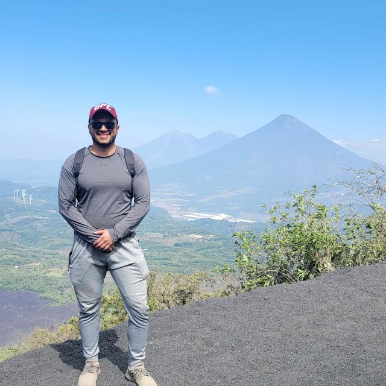

Jerson Jose Manuel Porras Rosales | WDD 130
I like to play chess and learn new things. I also enjoy running, and I am training to complete a 21K half marathon soon. I have a Cat.
I like to play chess and learn new things. I also enjoy running, and I am training to complete a 21K half marathon soon. I have a Cat.